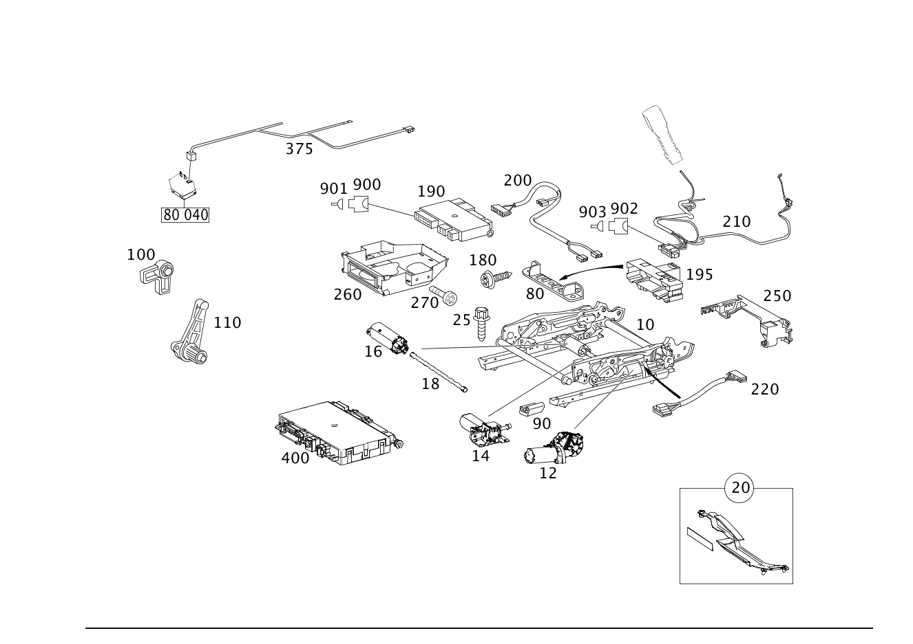

| № | Артикул | Название | Кол. | Примечание | Ограничение |
|---|---|---|---|---|---|
| 10 | A 171 910 13 36 | Регулировка сиденья (SITZEINSTELLUNG) | 1 | СЛЕВА | |
| 10 | A 171 910 14 36 | РЕГУЛИРОВКА СИДЕНЬЯ | 1 | СПРАВА | |
| 10 | A 171 910 50 36 | Регулировка сиденья (SITZEINSTELLUNG) | 1 | СПРАВА | |
| 10 | A 171 910 15 36 | Регулировка сиденья (SITZEINSTELLUNG) | 1 | СЛЕВА, С ФУНКЦИЕЙ ПАМЯТИ Рулевое управление: Влево | 275 |
| 10 | A 171 910 55 36 | Регулировка сиденья (SITZEINSTELLUNG) | 1 | СЛЕВА, С ФУНКЦИЕЙ ПАМЯТИ Рулевое управление: Влево | 275 |
| 10 | A 171 910 15 36 | Регулировка сиденья (SITZEINSTELLUNG) | 1 | СЛЕВА, С ФУНКЦИЕЙ ПАМЯТИ Рулевое управление: Вправо | 241 |
| 10 | A 171 910 55 36 | Регулировка сиденья (SITZEINSTELLUNG) | 1 | СЛЕВА, С ФУНКЦИЕЙ ПАМЯТИ Рулевое управление: Вправо | 241 |
| 10 | A 171 910 49 36 | Регулировка сиденья (SITZEINSTELLUNG) | 1 | СЛЕВА | |
| 10 | A 171 910 16 36 | Регулировка сиденья (SITZEINSTELLUNG) | 1 | СПРАВА, С ФУНКЦИЕЙ ПАМЯТИ Рулевое управление: Влево | 242 |
| 10 | A 171 910 56 36 | Регулировка сиденья (SITZEINSTELLUNG) | 1 | СПРАВА, С ФУНКЦИЕЙ ПАМЯТИ Рулевое управление: Влево | 242 |
| 10 | A 171 910 16 36 | Регулировка сиденья (SITZEINSTELLUNG) | 1 | СПРАВА, С ФУНКЦИЕЙ ПАМЯТИ Рулевое управление: Вправо | 275 |
| 10 | A 171 910 56 36 | Регулировка сиденья (SITZEINSTELLUNG) | 1 | СПРАВА, С ФУНКЦИЕЙ ПАМЯТИ Рулевое управление: Вправо | 275 |
| 12 | A 171 820 15 42 | - Электродвигатель (ELEKTROMOTOR) | 1 | РЕГУЛИР. ВЫСОТЫ СИД. ВОДИТ. СЛЕВА ЭЛЕКТРИЧ. РЕГУЛИР. Рулевое управление: Влево | 275 |
| 12 | A 171 820 15 42 | - Электродвигатель (ELEKTROMOTOR) | 1 | РЕГУЛИР. ВЫСОТЫ СИД. ВОДИТ. СЛЕВА ЭЛЕКТРИЧ. РЕГУЛИР. Рулевое управление: Вправо | 241 |
| 12 | A 171 820 16 42 | - Электродвигатель (ELEKTROMOTOR) | 1 | РЕГУЛИР. ВЫСОТЫ СИД. ВОДИТ. СПРАВА ЭЛЕКТРИЧ. РЕГУЛИР. Рулевое управление: Влево | 242 |
| 12 | A 171 820 16 42 | - Электродвигатель (ELEKTROMOTOR) | 1 | РЕГУЛИР. ВЫСОТЫ СИД. ВОДИТ. СПРАВА ЭЛЕКТРИЧ. РЕГУЛИР. Рулевое управление: Вправо | 275 |
| 14 | A 171 820 17 42 | - Электродвигатель (ELEKTROMOTOR) | 1 | РЕГУЛИРОВКА НАКЛОНА СЛЕВА Рулевое управление: Влево | 275 |
| 14 | A 171 820 17 42 | - Электродвигатель (ELEKTROMOTOR) | 1 | РЕГУЛИРОВКА НАКЛОНА СЛЕВА Рулевое управление: Вправо | 241 |
| 14 | A 171 820 18 42 | - Электродвигатель (ELEKTROMOTOR) | 1 | РЕГУЛИР. НАКЛОНА СПРАВА Рулевое управление: Влево | 242 |
| 14 | A 171 820 18 42 | - Электродвигатель (ELEKTROMOTOR) | 1 | РЕГУЛИР. НАКЛОНА СПРАВА Рулевое управление: Вправо | 275 |
| 16 | A 171 820 19 42 | - Электродвигатель (ELEKTROMOTOR) | 1 | ПРОДОЛЬНАЯ РЕГУЛИРОВКА Рулевое управление: Влево | 275 |
| 16 | A 171 820 19 42 | - Электродвигатель (ELEKTROMOTOR) | 1 | ПРОДОЛЬНАЯ РЕГУЛИРОВКА Рулевое управление: Вправо | 241 |
| 16 | A 171 820 19 42 | - Электродвигатель (ELEKTROMOTOR) | 1 | ПРОДОЛЬНАЯ РЕГУЛИРОВКА Рулевое управление: Влево | 242 |
| 16 | A 171 820 19 42 | - Электродвигатель (ELEKTROMOTOR) | 1 | ПРОДОЛЬНАЯ РЕГУЛИРОВКА Рулевое управление: Вправо | 275 |
| 18 | A 171 820 02 41 | - Тяга (GESTAENGE) | 1 | ПРИВОД Рулевое управление: Влево | 275 |
| 18 | A 171 820 02 41 | - Тяга (GESTAENGE) | 1 | ПРИВОД Рулевое управление: Вправо | 241 |
| 18 | A 171 820 02 41 | - Тяга (GESTAENGE) | 1 | ПРИВОД Рулевое управление: Влево | 242 |
| 18 | A 171 820 02 41 | - Тяга (GESTAENGE) | 1 | ПРИВОД Рулевое управление: Вправо | 275 |
| 20 | A 171 911 02 43 | - Комплект распорки (TEILESATZ STREBE) | 1 | (КОМПЛЕКТ ДЕТАЛЕЙ), СПРАВА [402] БОЛЬШЕ НЕ ПОСТАВЛЯЕТСЯ | 242/275 |
| 20 | A 171 911 01 43 | - Комплект распорки (TEILESATZ STREBE) | 1 | (КОМПЛЕКТ ДЕТАЛЕЙ), СЛЕВА [402] БОЛЬШЕ НЕ ПОСТАВЛЯЕТСЯ | 275/241 |
| 25 | A 202 990 01 22 | Самонарезающий винт (GEWINDEFURCHENDE SCHRAUBE) | 4 | КРЕПЛЕНИЕ СИДЕНЬЯ; M10X28 | |
| 25 | A 202 990 01 22 | Самонарезающий винт (GEWINDEFURCHENDE SCHRAUBE) | 4 | КРЕПЛЕНИЕ СИДЕНЬЯ; M10X28 | P98 |
| 25 | A 202 990 01 22 | Самонарезающий винт (GEWINDEFURCHENDE SCHRAUBE) | 4 | КРЕПЛЕНИЕ СИДЕНЬЯ; M10X28 | |
| 25 | A 202 990 01 22 | Самонарезающий винт (GEWINDEFURCHENDE SCHRAUBE) | 4 | КРЕПЛЕНИЕ СИДЕНЬЯ; M10X28 | P98 |
| 80 | A 211 545 51 40 | Держатель (HALTER) | 1 | ПЛАНКА ШТЕКЕРА | |
| 80 | A 171 545 24 40 | Держатель (HALTER) | 1 | ТОЧКА РАЗЪЕДИН. СИДЕНЬЯ Рулевое управление: Влево | 275 |
| 80 | A 171 545 24 40 | Держатель (HALTER) | 1 | ТОЧКА РАЗЪЕДИН. СИДЕНЬЯ Рулевое управление: Вправо | 241 |
| 80 | A 211 545 51 40 | Держатель (HALTER) | 1 | ПЛАНКА ШТЕКЕРА | |
| 80 | A 171 545 24 40 | Держатель (HALTER) | 1 | ТОЧКА РАЗЪЕДИН. СИДЕНЬЯ Рулевое управление: Вправо | 275 |
| 80 | A 171 545 24 40 | Держатель (HALTER) | 1 | ТОЧКА РАЗЪЕДИН. СИДЕНЬЯ Рулевое управление: Влево | 242 |
| 90 | A 168 919 15 20 | Крышка | 1 | СПЕРЕДИ СЛЕВА СНАРУЖИ | |
| 90 | A 168 919 15 20 | Крышка | 1 | СПЕРЕДИ СЛЕВА СНАРУЖИ | P98 |
| 90 | A 168 919 16 20 | Крышка | 1 | СПЕРЕДИ СПРАВА СНАРУЖИ | |
| 90 | A 168 919 16 20 | Крышка | 1 | СПЕРЕДИ СПРАВА СНАРУЖИ | P98 |
| 100 | A 171 959 00 61 | Рычаг (HEBEL) | 1 | СВЕРХУ | |
| 100 | A 171 959 00 61 | Рычаг (HEBEL) | 1 | СВЕРХУ | |
| 110 | A 171 959 01 61 | Рычаг (HEBEL) | 1 | ВНИЗУ | |
| 110 | A 171 959 01 61 | Рычаг (HEBEL) | 1 | ВНИЗУ | |
| 180 | A 001 984 64 29 | Болт с головкой торкс (SECHSRUNDSCHRAUBE) | 2 | КРЕПЛЕН. ДЕРЖАТ., МЕСТО РАЗЪЕМА СИДЕНЬЯ; 5X16 Рулевое управление: Влево | 275 |
| 180 | A 001 984 64 29 | Болт с головкой торкс (SECHSRUNDSCHRAUBE) | 2 | КРЕПЛЕН. ДЕРЖАТ., МЕСТО РАЗЪЕМА СИДЕНЬЯ; 5X16 Рулевое управление: Вправо | 241 |
| 180 | A 001 984 64 29 | Болт с головкой торкс (SECHSRUNDSCHRAUBE) | 2 | КРЕПЛЕН. ДЕРЖАТ., МЕСТО РАЗЪЕМА СИДЕНЬЯ; 5X16 Рулевое управление: Влево | 275 |
| 180 | A 001 984 64 29 | Болт с головкой торкс (SECHSRUNDSCHRAUBE) | 2 | КРЕПЛЕН. ДЕРЖАТ., МЕСТО РАЗЪЕМА СИДЕНЬЯ; 5X16 Рулевое управление: Вправо | 241 |
| 190 | A 211 820 85 85 | БЛОК УПРАВЛЕНИЯ | 1 | РЕГУЛИРОВКА СИДЕНЬЯ Рулевое управление: Влево | 275 |
| 190 | A 211 870 05 26 | ЭБУ сидений | 1 | РЕГУЛИРОВКА СИДЕНЬЯ Рулевое управление: Влево | 275 |
| 190 | A 211 870 49 26 | ЭБУ сидений | 1 | РЕГУЛИРОВКА СИДЕНЬЯ Рулевое управление: Влево [697] ДЕТАЛЬ ПОСТАВЛЯЕТСЯ ТОЛЬКО/ИЛИ ТАКЖЕ КАК ЗАП.ЧАСТЬ | 275 |
| 190 | A 211 870 99 26 | Блок управл. (STEUERGERAET) | 1 | РЕГУЛИРОВКА СИДЕНЬЯ Рулевое управление: Влево | 275 |
| 190 | A 211 870 40 85 | Блок управл. (STEUERGERAET) | 1 | РЕГУЛИРОВКА СИДЕНЬЯ Рулевое управление: Влево [697] ДЕТАЛЬ ПОСТАВЛЯЕТСЯ ТОЛЬКО/ИЛИ ТАКЖЕ КАК ЗАП.ЧАСТЬ | 275 |
| 190 | A 211 820 86 85 | БЛОК УПРАВЛЕНИЯ | 1 | РЕГУЛИРОВКА СИДЕНЬЯ Рулевое управление: Вправо | 241 |
| 190 | A 211 870 07 26 | ЭБУ сидений | 1 | РЕГУЛИРОВКА СИДЕНЬЯ Рулевое управление: Вправо | 241 |
| 190 | A 211 870 50 26 | ЭБУ сидений | 1 | РЕГУЛИРОВКА СИДЕНЬЯ Рулевое управление: Вправо | 241 |
| 190 | A 211 870 00 85 | ЭБУ сидений | 1 | РЕГУЛИРОВКА СИДЕНЬЯ Рулевое управление: Вправо | 241 |
| 190 | A 211 870 45 85 | Блок управл. (STEUERGERAET) | 1 | РЕГУЛИРОВКА СИДЕНЬЯ Рулевое управление: Вправо [697] ДЕТАЛЬ ПОСТАВЛЯЕТСЯ ТОЛЬКО/ИЛИ ТАКЖЕ КАК ЗАП.ЧАСТЬ | 241 |
| 190 | A 211 820 85 85 | БЛОК УПРАВЛЕНИЯ | 1 | РЕГУЛИРОВКА СИДЕНЬЯ Рулевое управление: Вправо | 275 |
| 190 | A 211 870 05 26 | ЭБУ сидений | 1 | РЕГУЛИРОВКА СИДЕНЬЯ Рулевое управление: Вправо | 275 |
| 190 | A 211 820 86 85 | БЛОК УПРАВЛЕНИЯ | 1 | РЕГУЛИРОВКА СИДЕНЬЯ Рулевое управление: Влево | 242 |
| 190 | A 211 870 07 26 | ЭБУ сидений | 1 | РЕГУЛИРОВКА СИДЕНЬЯ Рулевое управление: Влево | 242 |
| 190 | A 211 870 49 26 | ЭБУ сидений | 1 | РЕГУЛИРОВКА СИДЕНЬЯ Рулевое управление: Вправо [697] ДЕТАЛЬ ПОСТАВЛЯЕТСЯ ТОЛЬКО/ИЛИ ТАКЖЕ КАК ЗАП.ЧАСТЬ | 275 |
| 190 | A 211 870 99 26 | Блок управл. (STEUERGERAET) | 1 | РЕГУЛИРОВКА СИДЕНЬЯ Рулевое управление: Вправо | 275 |
| 190 | A 211 870 40 85 | Блок управл. (STEUERGERAET) | 1 | РЕГУЛИРОВКА СИДЕНЬЯ Рулевое управление: Вправо [697] ДЕТАЛЬ ПОСТАВЛЯЕТСЯ ТОЛЬКО/ИЛИ ТАКЖЕ КАК ЗАП.ЧАСТЬ | 275 |
| 190 | A 211 870 50 26 | ЭБУ сидений | 1 | РЕГУЛИРОВКА СИДЕНЬЯ Рулевое управление: Влево | 242 |
| 190 | A 211 870 00 85 | ЭБУ сидений | 1 | РЕГУЛИРОВКА СИДЕНЬЯ Рулевое управление: Влево | 242 |
| 190 | A 211 870 45 85 | Блок управл. (STEUERGERAET) | 1 | РЕГУЛИРОВКА СИДЕНЬЯ Рулевое управление: Влево [697] ДЕТАЛЬ ПОСТАВЛЯЕТСЯ ТОЛЬКО/ИЛИ ТАКЖЕ КАК ЗАП.ЧАСТЬ | 242 |
| 195 | A 046 545 66 28 | Штекер (STECKER) | 1 | СЛЕВА Рулевое управление: Влево | 275+(873/494+-873) |
| 195 | A 046 545 66 28 | Штекер (STECKER) | 1 | СПРАВА Рулевое управление: Влево | 242+(873/494+-873) |
| 195 | A 046 545 66 28 | Штекер (STECKER) | 1 | СЛЕВА Рулевое управление: Вправо | 241+873 |
| 195 | A 046 545 66 28 | Штекер (STECKER) | 1 | СПРАВА Рулевое управление: Вправо | 275+873 |
| 195 | A 046 545 66 28 | Штекер (STECKER) | 1 | СПРАВА Рулевое управление: Влево | 494 |
| 195 | A 046 545 66 28 | Штекер (STECKER) | 1 | СЛЕВА Рулевое управление: Влево | 494 |
| 195 | A 046 545 66 28 | Штекер (STECKER) | 1 | СЛЕВА | 873 |
| 195 | A 046 545 66 28 | Штекер (STECKER) | 1 | СПРАВА | 873 |
| 200 | A 171 540 85 05 | Жгут электропроводки (LEITUNGSSATZ) | 1 | РЕГУЛИРОВКА СИДЕНЬЯ ЭЛЕКТРИЧ. С ПАМЯТЬЮ Рулевое управление: Влево | 275 |
| 200 | A 171 540 85 05 | Жгут электропроводки (LEITUNGSSATZ) | 1 | РЕГУЛИРОВКА СИДЕНЬЯ ЭЛЕКТРИЧ. С ПАМЯТЬЮ Рулевое управление: Вправо | 241 |
| 200 | A 171 540 85 05 | Жгут электропроводки (LEITUNGSSATZ) | 1 | РЕГУЛИРОВКА СИДЕНЬЯ ЭЛЕКТРИЧ. С ПАМЯТЬЮ Рулевое управление: Вправо | 275 |
| 200 | A 171 540 85 05 | Жгут электропроводки (LEITUNGSSATZ) | 1 | РЕГУЛИРОВКА СИДЕНЬЯ ЭЛЕКТРИЧ. С ПАМЯТЬЮ Рулевое управление: Влево | 242 |
| 210 | A 171 540 84 05 | Жгут электропроводки (LEITUNGSSATZ) | 1 | БОКОВАЯ ПОДУШКА БЕЗОП. | |
| 210 | A 171 540 84 05 | Жгут электропроводки (LEITUNGSSATZ) | 1 | БОКОВАЯ ПОДУШКА БЕЗОП. | |
| 220 | A 171 820 00 05 | Жгут электропроводки (LEITUNGSSATZ) | 1 | ВЫКЛ\-ТЕЛЬ ЭЛ. РЕГУЛИРОВКИ СИДЕНЬЯ Рулевое управление: Влево [402] БОЛЬШЕ НЕ ПОСТАВЛЯЕТСЯ | 275 |
| 220 | A 171 820 00 05 | Жгут электропроводки (LEITUNGSSATZ) | 1 | ВЫКЛ\-ТЕЛЬ ЭЛ. РЕГУЛИРОВКИ СИДЕНЬЯ Рулевое управление: Вправо [402] БОЛЬШЕ НЕ ПОСТАВЛЯЕТСЯ | 241 |
| 220 | A 171 820 00 05 | Жгут электропроводки (LEITUNGSSATZ) | 1 | ВЫКЛ\-ТЕЛЬ ЭЛ. РЕГУЛИРОВКИ СИДЕНЬЯ Рулевое управление: Вправо [402] БОЛЬШЕ НЕ ПОСТАВЛЯЕТСЯ | 275 |
| 220 | A 171 820 00 05 | Жгут электропроводки (LEITUNGSSATZ) | 1 | ВЫКЛ\-ТЕЛЬ ЭЛ. РЕГУЛИРОВКИ СИДЕНЬЯ Рулевое управление: Влево [402] БОЛЬШЕ НЕ ПОСТАВЛЯЕТСЯ | 242 |
| 250 | A 171 545 01 47 | Держатель (HALTER) | 1 | РАЗЪЕМН.КОЛОДКА СЛЕВА Рулевое управление: Влево | 275 |
| 250 | A 171 545 01 47 | Держатель (HALTER) | 1 | РАЗЪЕМН.КОЛОДКА СЛЕВА Рулевое управление: Вправо | 241 |
| 250 | A 171 545 02 47 | Держатель (HALTER) | 1 | РАЗЪЕМН.КОЛОДКА СПРАВА Рулевое управление: Влево | 275 |
| 250 | A 171 545 02 47 | Держатель (HALTER) | 1 | РАЗЪЕМН.КОЛОДКА СПРАВА Рулевое управление: Вправо | 241 |
| 260 | A 171 545 03 47 | Держатель (HALTER) | 1 | ДЕРЖАТЕЛЬ БЛОКА УПРАВЛЕНИЯ Рулевое управление: Влево | 275 |
| 260 | A 171 545 03 47 | Держатель (HALTER) | 1 | ДЕРЖАТЕЛЬ БЛОКА УПРАВЛЕНИЯ Рулевое управление: Вправо | 241 |
| 260 | A 171 545 03 47 | Держатель (HALTER) | 1 | ДЕРЖАТЕЛЬ БЛОКА УПРАВЛЕНИЯ Рулевое управление: Влево | 275 |
| 260 | A 171 545 03 47 | Держатель (HALTER) | 1 | ДЕРЖАТЕЛЬ БЛОКА УПРАВЛЕНИЯ Рулевое управление: Вправо | 241 |
| 270 | A 001 984 57 29 | Болт с головкой торкс (SECHSRUNDSCHRAUBE) | 2 | КРЕПЛЕНИЕ КРОНШТЕЙНА; M4X14 Рулевое управление: Влево | 275 |
| 270 | A 001 984 57 29 | Болт с головкой торкс (SECHSRUNDSCHRAUBE) | 2 | КРЕПЛЕНИЕ КРОНШТЕЙНА; M4X14 Рулевое управление: Вправо | 241 |
| 375 | A 171 540 10 33 | Электрический провод (ELEKTRISCHE LEITUNG) | 1 | РЕГУЛИРОВКА ПОЯСНИЧНОЙ ОБЛАСТИ [402] БОЛЬШЕ НЕ ПОСТАВЛЯЕТСЯ | U22 |
| 400 | A 211 870 40 85 | Блок управл. (STEUERGERAET) | 1 | ЛЕВОЕ СИДЕНЬЕ Рулевое управление: Влево [697] ДЕТАЛЬ ПОСТАВЛЯЕТСЯ ТОЛЬКО/ИЛИ ТАКЖЕ КАК ЗАП.ЧАСТЬ | 275 |
| 400 | A 211 870 45 85 | Блок управл. (STEUERGERAET) | 1 | ЛЕВОЕ СИДЕНЬЕ Рулевое управление: Вправо [697] ДЕТАЛЬ ПОСТАВЛЯЕТСЯ ТОЛЬКО/ИЛИ ТАКЖЕ КАК ЗАП.ЧАСТЬ | 241 |
| 400 | A 211 870 47 85 | Блок управл. (STEUERGERAET) | 1 | ЛЕВОЕ СИДЕНЬЕ Рулевое управление: Влево [697] ДЕТАЛЬ ПОСТАВЛЯЕТСЯ ТОЛЬКО/ИЛИ ТАКЖЕ КАК ЗАП.ЧАСТЬ | 275 |
| 400 | A 211 870 48 85 | Блок управл. (STEUERGERAET) | 1 | ЛЕВОЕ СИДЕНЬЕ Рулевое управление: Вправо [697] ДЕТАЛЬ ПОСТАВЛЯЕТСЯ ТОЛЬКО/ИЛИ ТАКЖЕ КАК ЗАП.ЧАСТЬ | 241 |
| 400 | A 211 870 40 85 | Блок управл. (STEUERGERAET) | 1 | ПРАВОЕ СИДЕНЬЕ Рулевое управление: Вправо [697] ДЕТАЛЬ ПОСТАВЛЯЕТСЯ ТОЛЬКО/ИЛИ ТАКЖЕ КАК ЗАП.ЧАСТЬ | 275 |
| 400 | A 211 870 45 85 | Блок управл. (STEUERGERAET) | 1 | ПРАВОЕ СИДЕНЬЕ Рулевое управление: Влево [697] ДЕТАЛЬ ПОСТАВЛЯЕТСЯ ТОЛЬКО/ИЛИ ТАКЖЕ КАК ЗАП.ЧАСТЬ | 242/242+494 |
| 400 | A 211 870 47 85 | Блок управл. (STEUERGERAET) | 1 | ПРАВОЕ СИДЕНЬЕ Рулевое управление: Вправо [697] ДЕТАЛЬ ПОСТАВЛЯЕТСЯ ТОЛЬКО/ИЛИ ТАКЖЕ КАК ЗАП.ЧАСТЬ | 275 |
| 400 | A 211 870 48 85 | Блок управл. (STEUERGERAET) | 1 | ПРАВОЕ СИДЕНЬЕ Рулевое управление: Влево [697] ДЕТАЛЬ ПОСТАВЛЯЕТСЯ ТОЛЬКО/ИЛИ ТАКЖЕ КАК ЗАП.ЧАСТЬ | 242/242+494 |
| 900 | A 220 545 37 28 | Корпус штекерной втулки (STECKHUELSENGEHAEUSE) | 2 | БУ РЕГУЛИР. СИДЕН. N32/1 / N32/2; 14\-PIN SLK2.8 | |
| 900 | A 220 545 37 28 | Корпус штекерной втулки (STECKHUELSENGEHAEUSE) | 2 | БУ РЕГУЛИР. СИДЕН. N32/1; 14\-PIN SLK2.8 | |
| 901 | A 013 545 15 26 | Контактная втулка (KONTAKTBUCHSE) | NB | 0.5\-0.75 MM2 SLK2.8 | |
| 901 | A 000 540 41 05 | Электрический провод (ELEKTRISCHE LEITUNG) | NB | 4.0 MM2 SLK2.8 [T774] СОЕДИНИТЕЛИ СЛЕДУЕТ ЗАКАЗЫВАТЬ В СООТВЕТСТВИИ С ОБЩИМ ПОПЕРЕЧНЫМ СЕЧЕНИЕМ СОЕДИНЯЕМЫХ ПРОВОДОВРУКОВОДСТВО ПО РЕМОНТУ СМ. WIS. ================================================================================================= SOLDER CONNECTOR SLEEVES: TOTAL WIRE CROSS-SECTION: A 001 546 99 41 GREEN 0.7 - 2.4 MM2 A 002 546 00 41 RED 2.0 - 4.0 MM2 A 002 546 01 41 BLUE 3.5 - 8.0 MM2 A 002 546 11 41 YELLOW 7.5 - 12.0 MM2 BUTT JOINT: A 002 546 13 41 0.5 MM2 A 002 546 14 41 0.8 MM2 A 002 546 15 41 1.3 MM2 A 002 546 16 41 2.0 MM2 =================================================================================================== | |
| 901 | A 000 540 41 05 | Электрический провод (ELEKTRISCHE LEITUNG) | NB | 4.0 MM2 SLK2.8 [T774] СОЕДИНИТЕЛИ СЛЕДУЕТ ЗАКАЗЫВАТЬ В СООТВЕТСТВИИ С ОБЩИМ ПОПЕРЕЧНЫМ СЕЧЕНИЕМ СОЕДИНЯЕМЫХ ПРОВОДОВРУКОВОДСТВО ПО РЕМОНТУ СМ. WIS. ================================================================================================= SOLDER CONNECTOR SLEEVES: TOTAL WIRE CROSS-SECTION: A 001 546 99 41 GREEN 0.7 - 2.4 MM2 A 002 546 00 41 RED 2.0 - 4.0 MM2 A 002 546 01 41 BLUE 3.5 - 8.0 MM2 A 002 546 11 41 YELLOW 7.5 - 12.0 MM2 BUTT JOINT: A 002 546 13 41 0.5 MM2 A 002 546 14 41 0.8 MM2 A 002 546 15 41 1.3 MM2 A 002 546 16 41 2.0 MM2 =================================================================================================== | |
| 901 | A 013 545 15 26 | Контактная втулка (KONTAKTBUCHSE) | NB | 0.5\-0.75 MM2 SLK2.8 | |
| 901 | A 000 540 40 05 | Электрический провод (ELEKTRISCHE LEITUNG) | NB | 2.5 MM2 SLK2.8 [T774] СОЕДИНИТЕЛИ СЛЕДУЕТ ЗАКАЗЫВАТЬ В СООТВЕТСТВИИ С ОБЩИМ ПОПЕРЕЧНЫМ СЕЧЕНИЕМ СОЕДИНЯЕМЫХ ПРОВОДОВРУКОВОДСТВО ПО РЕМОНТУ СМ. WIS. ================================================================================================= SOLDER CONNECTOR SLEEVES: TOTAL WIRE CROSS-SECTION: A 001 546 99 41 GREEN 0.7 - 2.4 MM2 A 002 546 00 41 RED 2.0 - 4.0 MM2 A 002 546 01 41 BLUE 3.5 - 8.0 MM2 A 002 546 11 41 YELLOW 7.5 - 12.0 MM2 BUTT JOINT: A 002 546 13 41 0.5 MM2 A 002 546 14 41 0.8 MM2 A 002 546 15 41 1.3 MM2 A 002 546 16 41 2.0 MM2 =================================================================================================== | |
| 901 | A 013 545 16 26 | Контактная втулка (KONTAKTBUCHSE) | NB | 1.5\-2.5 MM2 SLK2.8 | |
| 902 | A 003 540 82 81 | - Розетка (STECKDOSE) | 1 | ПРОМЕЖУТОЧНЫЙ ПРОВОД БОКОВОЙ ПОДУШКИ БЕЗОПАСНОСТИ X28/29; X28/30; 14\-PIN MQS | |
| 903 | A 041 545 28 28 | - Штекер (STECKER) | NB | 0.5\-0.75 MM2 MQS |
Позиций: 119 · подписано на схемах: 119 · колесо — плавный зум в курсор, перетаскивание — пан, двойной клик — зум, клик по артикулу — скопировать · наведите на строку или цифру на схеме — подсветка связки, клик — закрепить.